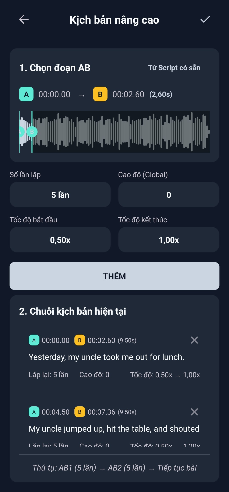
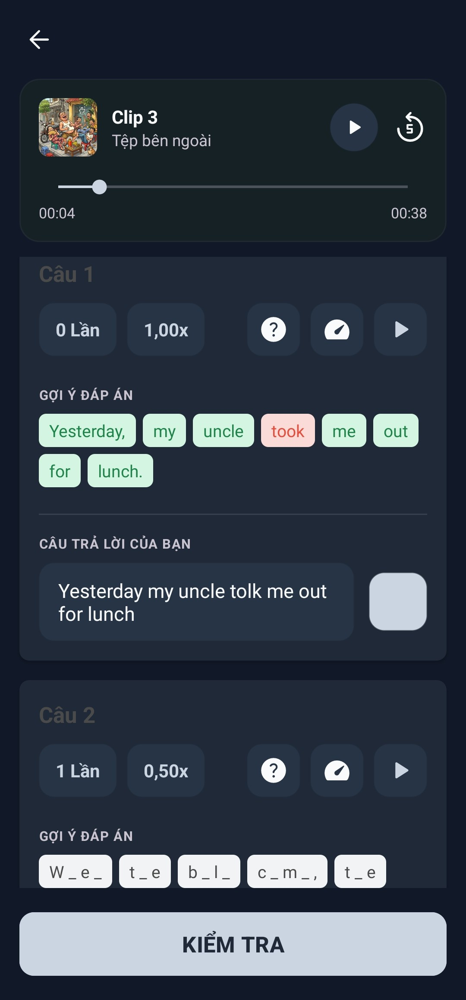
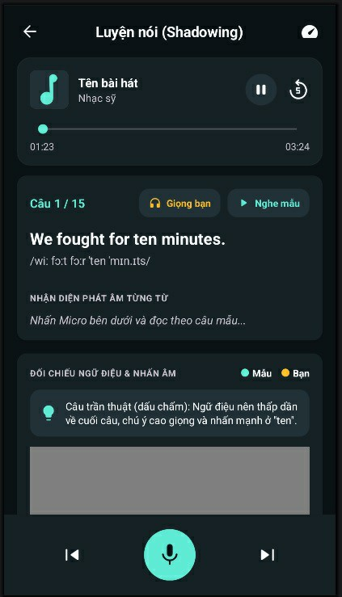
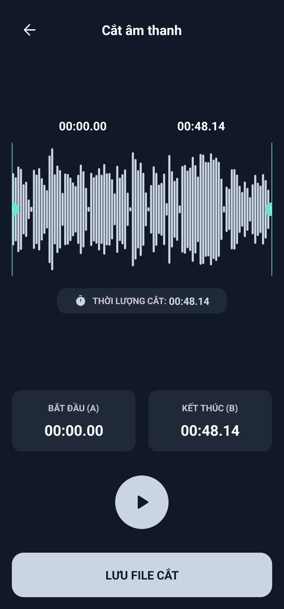

Một trình phát, nhiều cách tận hưởng
Thưởng thức âm nhạc, theo dõi podcast, nghe sách nói và xem video từ kho nội dung của bạn.
- play_circle_filled Phát tệp âm thanh và video trên thiết bị.
- speed Điều chỉnh tốc độ để nghe, xem theo nhu cầu.
Nghe nhạc, xem video và biến podcast, sách nói thành nguồn luyện ngoại ngữ. Chủ động tốc độ, cách lặp và nhịp học trong cùng một ứng dụng.
shop Tải trên Google Play
Thưởng thức âm nhạc, theo dõi podcast, nghe sách nói và xem video từ kho nội dung của bạn.

Để trình phát tự lặp và chuyển đoạn theo thiết lập của bạn. Nghe kỹ phần chưa rõ mà không phải liên tục tua lại.

Luyện nghe chép chính tả tiếng Anh và tiếng Trung với âm thanh và bản chép lời. Nhận ra từ còn nghe thiếu để luyện đúng chỗ.

Luyện nói theo podcast, sách nói và hội thoại không có nhạc nền. Rèn phát âm, nhịp điệu và cách nhấn giọng qua từng câu.

Cắt âm thanh, chuyển video thành audio và đồng bộ lời ngay trong ứng dụng, thuận tiện cho cả giải trí lẫn học tập.
Một ứng dụng để thưởng thức nhạc, xem video, xử lý âm thanh và luyện ngoại ngữ. Khám phá nhiều hơn từ kho nội dung của bạn cùng LalaMuzic.
shop Tải trên Google Play